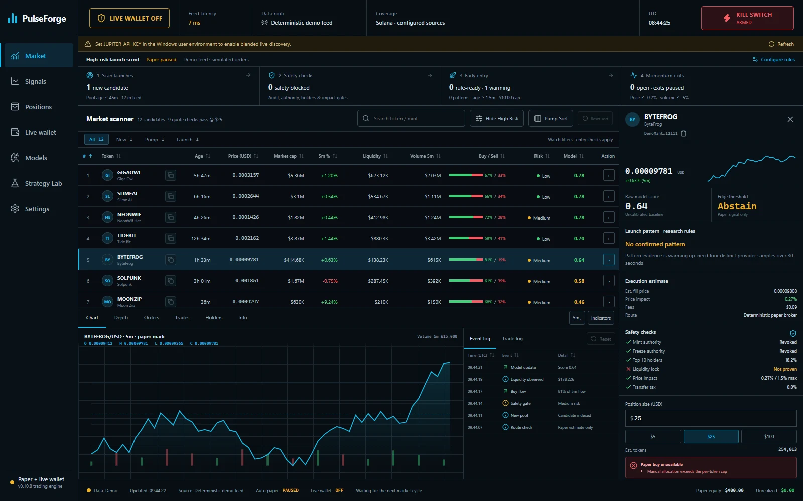
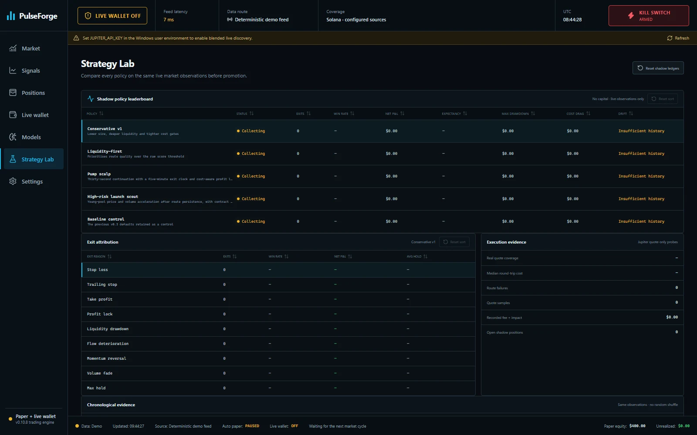

Solana trading workstation
Your rules.
Your trading workstation.
Scan Solana markets, inspect every decision and test your trading rules in a local desktop workstation.
Runs on your computerPaper trading controlsPublic source on GitHub
Inside the workstation
See what you’re working with.
Real screenshots from the current app. This browser preview uses deterministic demo data.

Strategy Lab

Scan the market
Solana market scanning with configurable filters, token details and decision inspection.
Test your rules
Automatic paper entries and exits, configurable limits and persistent paper positions.
Review the evidence
Model research, cost estimates and transparent safety checks before execution.
Choose your platform
Your workstation starts here.
Linux and Mac support market research and paper trading. Wallet import and live signing require Windows in this release.
Windows
Windows 10/11 x64 · WebView2 · unsigned installer.
Linux
x64 · Ubuntu 22.04+ / WebKitGTK 4.1. DEB or AppImage.
Mac
Intel and Apple Silicon. DMGs are unsigned and not notarized.
Getting started
From download to workspace.
- Choose the installer for your operating system.
- On Windows, run the installer. On Mac, open the DMG and drag PulseForge to Applications. On Linux, install the DEB or run the AppImage.
- Explore demo and paper controls, then configure your own provider keys for live market data.
Local by design
The app runs on your computer. This page provides downloads and documentation.
Linux and Mac support market research and paper trading. Wallet import and live signing require Windows in this release.
Read the full documentation ↗Before you trade
Live trading uses real funds and can lose money. Windows live signing starts disarmed; importing a wallet does not activate trading. The model is an uncalibrated baseline, not a profit guarantee.